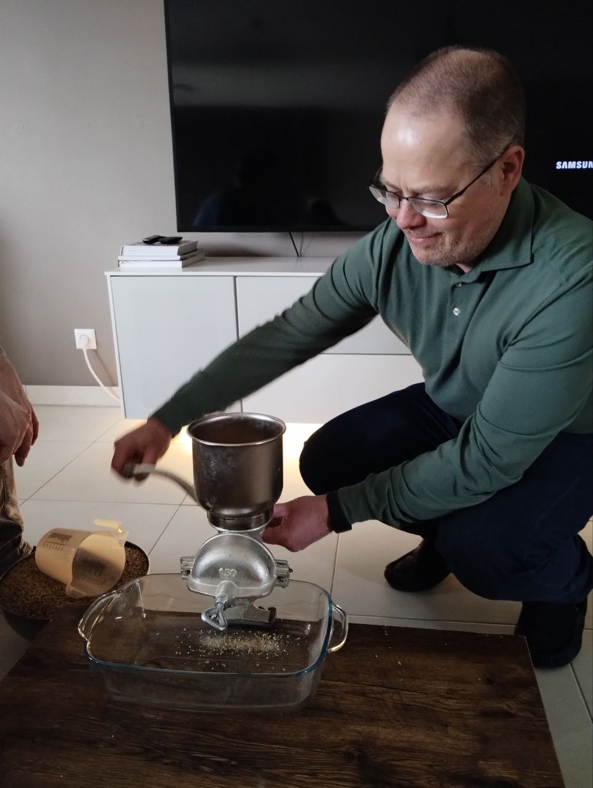

Brew Day
As a birthday present Christophe, the lead brewer at cha, gave me the chance to have my very own beer created.
Since I moved to Luxembourg I have grown to like Belgian Blondes like Brugse Zot and Trappist ales like Orval, so with my preferred flavour profile Christophe created a recipe on GrainFather, a Belgian Blonde inspired beer with a higher EBC and hopefully not too much banana.
The welcome
Before brewing we were treated to home made bread, honey from , ham, cheese, fruits and yoghurts, important to have a good feed before brewing, it is a not a short process and it is important to eat before trying the previous brews for future inspiration.
Hydration and energy
It is important to keep hydrated and energised while doing doing taxing jobs like water chemistry calculations and cranking the handle on the grain mill, we started that with a david629801, one of cha's previous brews, a fine West coast IPA to wake up the taste buds.
The water
Water makes up over 90% of beer and the levels of sulphates and chloride in the water will in part dictate the dryness, roundness and fullness of the beer.
This goes into the GrainMaster to come up to 66c ready for the mash.
The milling
The recipe calls for 4 fermentables, that is a grain which will provide the sugars for the yeast to ferment, we used;
- Pale Ale Malt - 3.330 kg
- Pilsner Malt - 3.330 kg
- Munich Malt - Dark - 0.700 kg
- Caramel 100 - 38L - 0.150 kg
Each bring different different characteristics to the beer.

Brew Day +1 - Fermentation
After 24 hours at 22c
Brew Day +5 - Cold Crash
Fermentation is complete, the warm uncarbonated beer is giving off boozy banana and spicy notes.
Taste wise it has a first hit of sweetness with a medium body. Some banana, booze spice, followed by a slightly sour finish.
Time now to cool the beer to 2c which will stop any remaining yeast activity and cause the sediment to sink to the bottom.
As the cooling happens it is possible for the pressure differential between the fermentation bucket and the fridge to lead to air from the fridge being sucked through the air lock, this could lead to oxidization which could affect the taste of the beer, placing a balloon filled with CO2 over the air lock can protect against that.
Brew Day +7 - Kegging
Sanitization! Sanitization! Sanitization!
Sanitize everything, every connection, the keg, the tap on the fermentation bucket, the pipes and use CO2 to purge the keg.
Create a closed loop between the keg and the fermentation bucket.
The pressure in the keg and gravity will push the beer into the keg. It is important to have the right pressure in the keg, too much and the fermentation bucket could explode, too little and it will take a long time for the beer to flow into the keg, so not PPPPSSSSSTTTTT and not pppssssstttt but PPPPPSSSTTTT!
Carbonation
Approaches to forced carbonation of beer can be categorized as;
- Set & Forget Method
- Semi-Speed Carbonation Method
- Rapid Force Carbonation Method